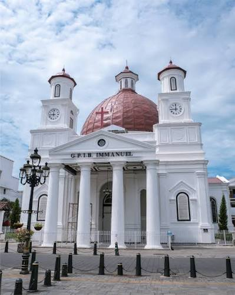
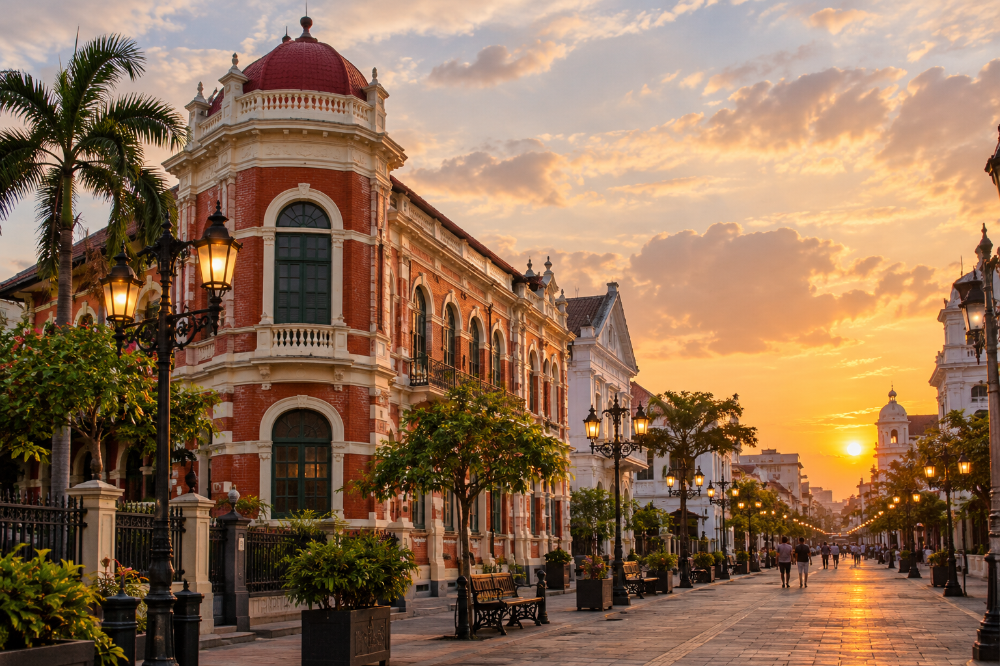
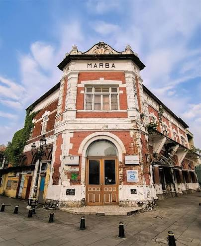
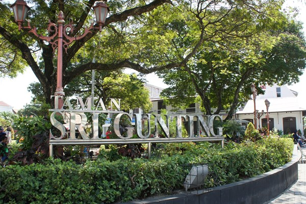
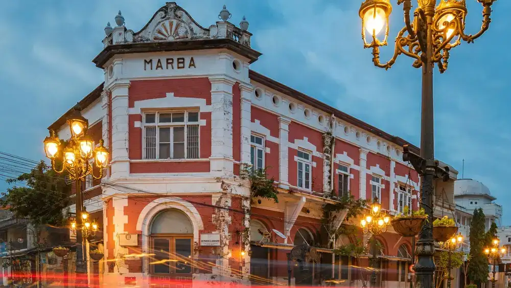

01 / LANDMARKGereja Blenduk
Ikon Kota Lama dengan kubah khas dan arsitektur yang mencuri perhatian.

WARISAN SEJARAH • SEMARANG, JAWA TENGAH
Susuri lorong waktu, temukan arsitektur klasik, dan rasakan pesona Kota Lama Semarang yang selalu punya kejutan.
KISAH DI BALIK KOTA
Kota Lama Semarang adalah kawasan cagar budaya yang menyimpan jejak sejarah melalui bangunan-bangunan tua bergaya Eropa. Kini, kawasan ini menjadi ruang hidup untuk berjalan santai, menikmati seni, berburu foto, dan menemukan cerita baru.
Jelajahi ceritanya ⟶Datang sebagai pengunjung.
Pulang membawa cerita.
JANGAN LEWATKAN
Dari bangunan ikonik hingga sudut tersembunyi, pilih tempat yang ingin kamu jelajahi lebih dulu.

01 / LANDMARKIkon Kota Lama dengan kubah khas dan arsitektur yang mencuri perhatian.

02 / ARSITEKTURBatu bata merah dan detail klasik yang menjadi latar foto favorit.

03 / RUANG PUBLIKTempat singgah untuk beristirahat dan menikmati suasana sekitar.
BUKAN SEKADAR JALAN-JALAN
Setiap orang punya cara sendiri untuk jatuh hati pada kota lama. Mau berburu foto, mengenal sejarah, atau sekadar menikmati suasana?

WAKTUNYA JELAJAH
Isi formulir singkat ini untuk membuat rencana kunjungan. Pilih minatmu dan tentukan waktu yang cocok.